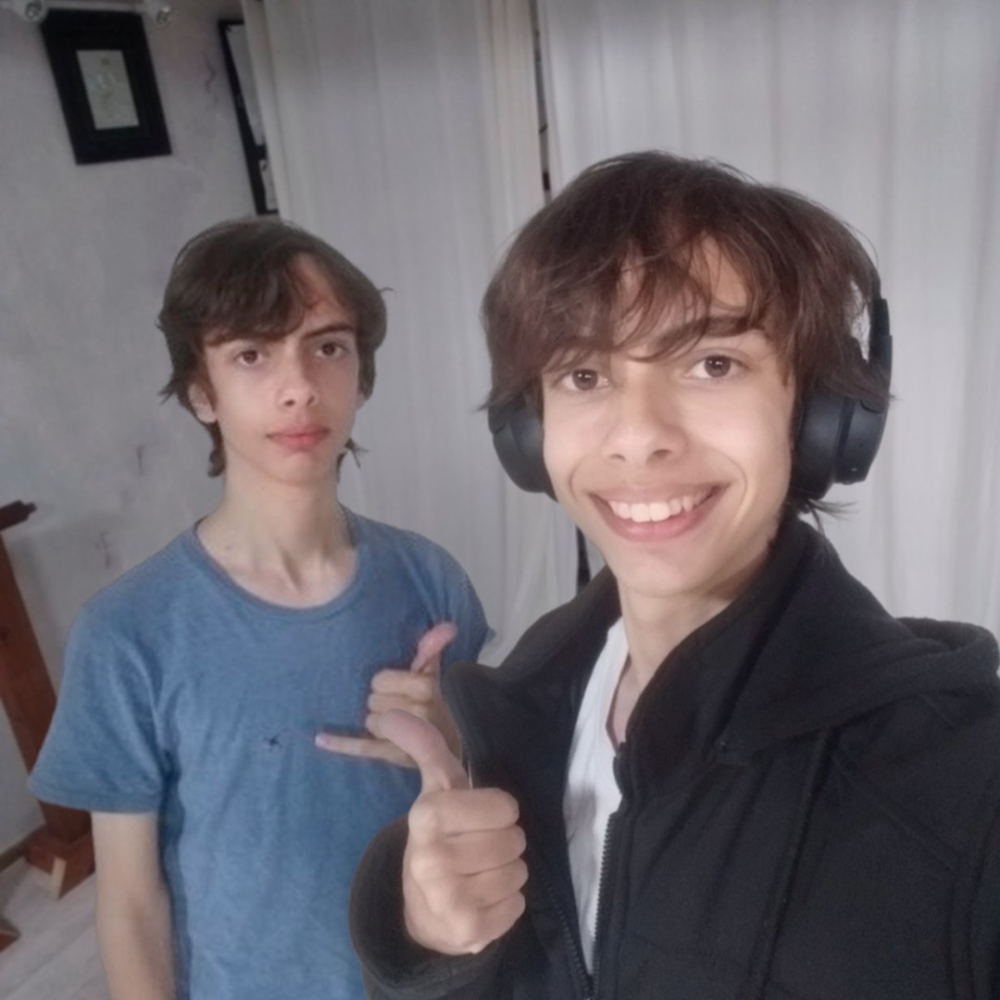

Portfolio de Lucas Vargas
2º ano - Ensino Médio
Sobre Mim
Hey Guys!
Eu sou o Lucas. Curto criar coisas e explorar novas ideias, principalmente no mundo dos games e da computação. Toco violão nas horas vagas, mas minha maior diversão é ver projetos ganhando vida — desde programação e modelagem até animação 3D.
Trabalho como freelancer com clientes internacionais, desenvolvendo animações e modelos 3D, e já participei da criação de alguns jogos. Gosto de me envolver em todas as etapas de um projeto, sempre aprendendo algo novo no processo.
No fim, meu objetivo é fazer coisas que gosto, que desafiem minha criatividade e que me permitam ver o resultado final funcionando do jeito que imaginei.